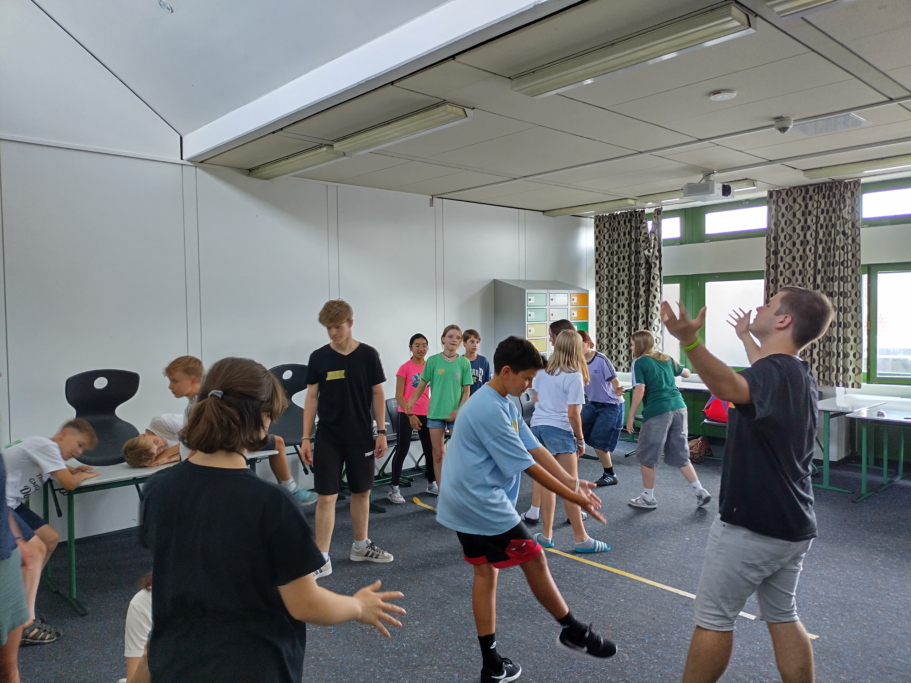
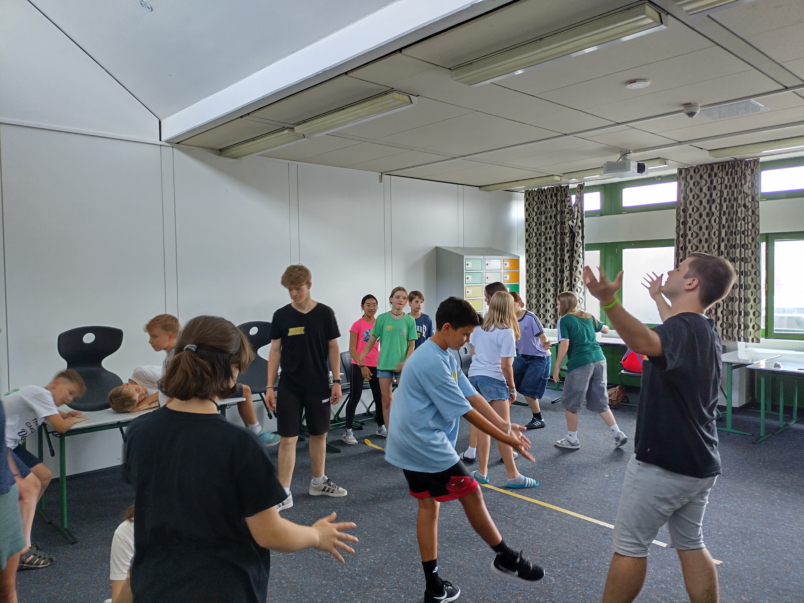
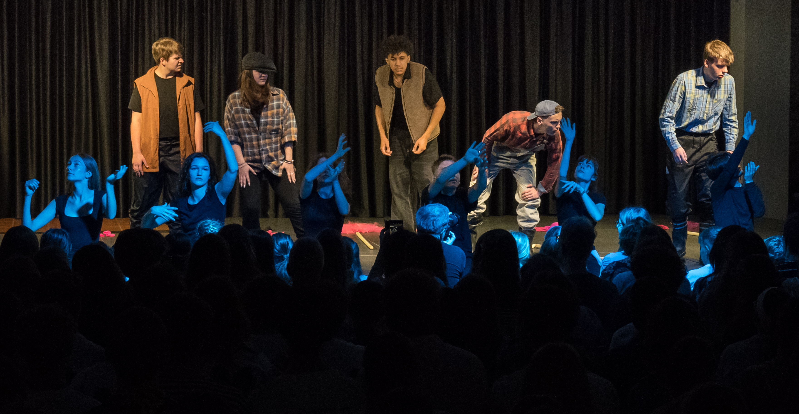
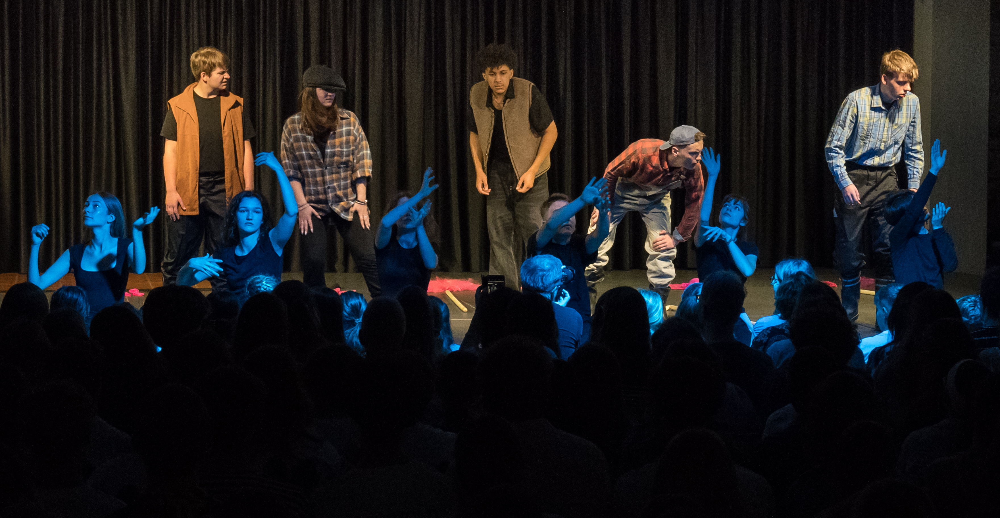

Der dritte Tag..
 

 

…und damit auch der vorletzte Tag dieser großartigen Veranstaltung machte zu Beginn die Bühne frei für die Theatergruppe des Hans-Leinberger-Gymnasium aus Landshut mit ihrem Stück „Undine“. Mit Hilfe des Wasserwesens Undine und einer Affäre mit einem verheirateten Mann werden Vorurteile und Stereotypen gegenüber beide Geschlechtern kritisiert und in Frage gestellt.
Hoch unterhaltsam ging es zeitnah auch mit den Stegreifspielen weiter. Die Gruppen erhielten ein zufälliges Sprichwort mit dem Wort „Luft“ und hatten dann kurz Zeit eine Szene zu entwickeln, in der das Sprichwort eine Rolle spielt. Die Ergebnisse konnten sich durchaus sehen lassen und sorgten für beste Unterhaltung aller Anwesenden.
Am Nachmittag hatten die Teilnehmenden die einmalige Möglichkeit in unterschiedlichsten Workshops ihren Horizont zu erweitern. Von einem Zauber-, über einen DJ- bis hin zu einem Maskenbau und Maskenspiel-Workshop war für jeden Geschmack etwas dabei. Anschließend erhielten die Teilnehmer die Möglichkeit ihre Ergebnisse bzw. erlernten Fähigkeiten zu präsentieren.
Nach dem Abendessen war die vorletzte Gruppe an der Reihe, ihr Stück zu präsentieren. Das Ernst-Mach-Gymnasium aus Haar griff mit ihrem Stück „Stimmen“ das wohl brisanteste Thema aller Stücke auf. Denn es setzt sich mit den nationalsozialistischen Euthanasie-Verbrechen auseinander, welche unter anderem auch im psychiatrischen Klinikum Haar ihrem Anfang hatten. Diese Verbrechen wurden dem Publikum enorm anschaulich und emotional präsentiert.
Den Schlussakkord des letzten vollen Tages setzte erneut ein großartiges Abendprogramm. Dieses Mal stand eine Karaoke-Abend auf dem Programm, bei dem jeder die Möglichkeit erhielt, seine Gesangskünste unter Beweis zu stellen.